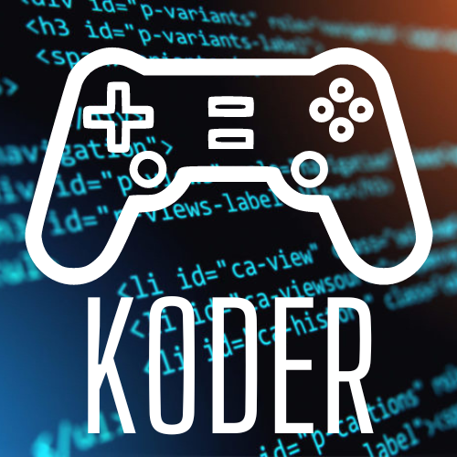

Koder
Aspiring game developer working on the games for mobile and PC
One year experience with Unity and C#.
Good at version control systems like git.
Skills
- Programming languages: C#
- Game engines: Unity
- Graphics software: Blender, BoscaCeoil, Canva
- Sound design software: Audacity, FL Studio
- AI systems: Chat GPT, Dalle 2, Midjourney, Bing AI